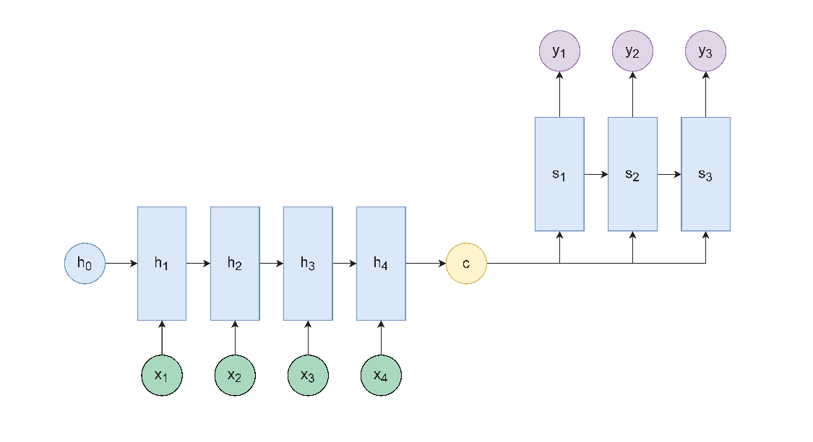
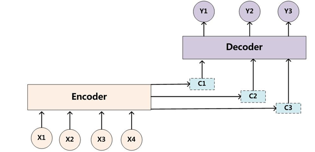

序列到序列模型
序言
序列到序列模型（sequence to sequence, seq2seq）是自然语言处理中的一个重要模型，在机器翻译、对话系统等多个领域都有着广泛的应用。今天借着准备面试的机会，将这一部分知识整理出一篇博客。
seq2seq

seq2seq 模型常用语序列间的转化任务，其结构如上图所示，主要由两部分组成：
- 编码器，常见为循环神经网络，用以将输入序列编码为固定维度的向量（即最后时刻编码器的隐藏状态），进而投喂给解码器进行解码。
- 解码器，同样常见为循环神经网络，用以根据向量输出最终序列。可以看做一个条件语言模型，“条件” 即为输入序列。因此，可以使用预训练的语言模型初始化权重，再进行 fine-tune。
在训练阶段，解码器的输出仅用于计算损失，解码器的输入是编码器得到的上下文状态向量 (最后一个时间步的隐藏状态) 和目标序列当前的单词。换而言之，训练时，解码器的输出一定是与目标序列等长的。
在推理阶段，解码器每一个时间步的输出是下一个时间步的输入。可以通过限制输出序列的最大长度或者在输出结束标志后停止。对于 batch 的数据，往往使用限制最大长度，再删去结束标志之后的部分。
seq2seq 虽然简单有效，但存在以下的缺点：
- 输入序列过长时，固定长度的向量无法存储全部的信息，进而造成信息丢失。
- 贪婪解码问题，下面会提到。
贪婪解码问题
对于 seq2seq 模型，我们希望得到概率最大的输出序列，即建模的是 \(\arg\max_YP(Y|X)\)（\(X\) 为输入序列，\(Y\) 为输出序列）。然而事实上，解码器每一步求解的是 \(\arg\max_{y_t}P(y_t|y_{t-1:1},X)\)，即当前时间步概率最大的单词。这样以来，整个解码的过程就是贪婪的，每一步的单词概率最大并不意味着整个句子的概率最大。
怎么解决这个问题呢？解决方法是 beam search（光束搜索）。核心思想是，在推理阶段（训练时不需要，因为知道 ground truth），
保留 k 个可能性最大的序列（可能性以概率相乘的对数作为分数，即 \(\sum_{i=1}^tlogP_{I,M}(y_i|y_{i-1:1},X)\)）。
当某个序列输出终止符号时，可以认作该序列已经结束，继续维护其他序列。
搜索的终止条件可以根据任务具体选择，例如：
- 最多搜索多长时间步（例如 30 步）。
- 至少拥有多少个候选序列（例如 10 个）。
在搜索结束，得到若干个候选序列后，将序列分数标准化后，即 \(\frac{1}{t}\sum_{i=1}^tlogP_{I,M}(y_i|y_{i-1:1},X)\)作为最终的分数。这样是为了避免短序列概率更大（概率连乘的数量小），然后选择概率最大的序列。
在搜索时，分数不需要进行标准化，因为搜索时处理的序列总是等长的。
注意力机制
为了解决 seq2seq 在面对长序列时的信息丢失问题，研究者们在 seq2seq 中引入了注意力（Attention）机制。借助于注意力机制，解码器能够在解码时与输入序列直接相连，还可以关注到输入序列的不同部分。公式化描述如下：
首先根据编码器状态 \({h_1,\dots,h_N}\) 与当前解码器状态 \(s_t\) 点乘计算分数 \[ e^t=[s_t^\intercal h_1,\dots,s_t^\intercal h_N]\in \mathbb R^N \] 将分数归一化后作为输入序列与当前位置相关性的概率分布： \[ \alpha^t=softmax(e^t)\in \mathbb R ^N \] 加权求和后作为最终的注意力结果： \[ \alpha_t=\sum_{i=1}^N\alpha_i^th_i\in \mathbb R^h \] 将注意力结果与解码器隐藏状态拼接后计算新的隐藏状态 \(\hat s_t\)，再计算输出。 \[ [\alpha_t;s_t]\in \mathbb R^{2h} \] 带有 Attention 的 seq2seq 的简单示意图如下：

广义的 Attention 机制
广义的 attention 定义如下：给定一组向量 values，一个向量 query，attention 是 value 的加权和，权重是某个相似性度量函数，例如点积、加性注意力等。
度量函数可以为：
点乘：\(e_i=s^\intercal h_i\in \mathbb R\)
乘法注意力：\(e_i=s^\intercal Wh_i \in \mathbb R\)（其中 \(W\in \mathbb R^{d_2*d_1}\) 为权重矩阵）
加法注意力：\(e_i=v^\intercal tanh(W_1h_i+W_2s)\in \mathbb R\)（其中 \(W_1,W_2\) 为权重矩阵，\(v\) 是权重向量）
对应到 seq2seq 的 Attention 机制中，query 向量为解码器隐藏状态，values 为编码器的全部隐藏状态，度量函数为点乘。
联想一下 BERT 的自注意力机制：
对于每个单词向量，通过 Query、Key、Value 三个参数矩阵计算得到三个向量：q,k,v。在每个位置，使用当前位置的 query 向量与每个位置的 key 做点乘，作为相似性度量，再对 value 矩阵加权求和。公式如下： \[ Attention(Q,K,V)=softmax(\frac{QK^\intercal}{\sqrt{d_k}})V \]